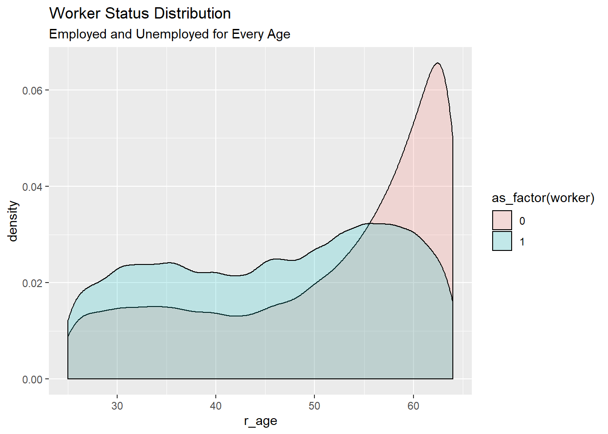
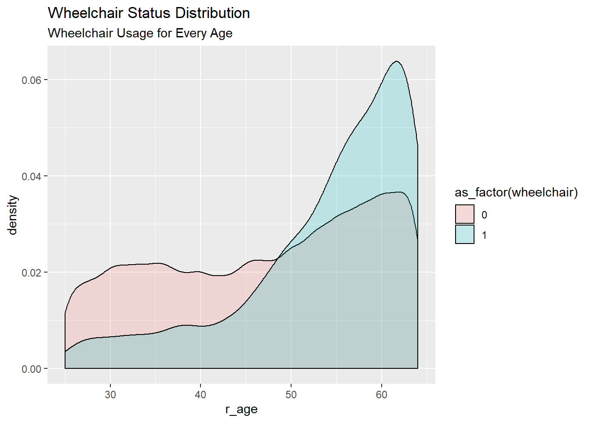
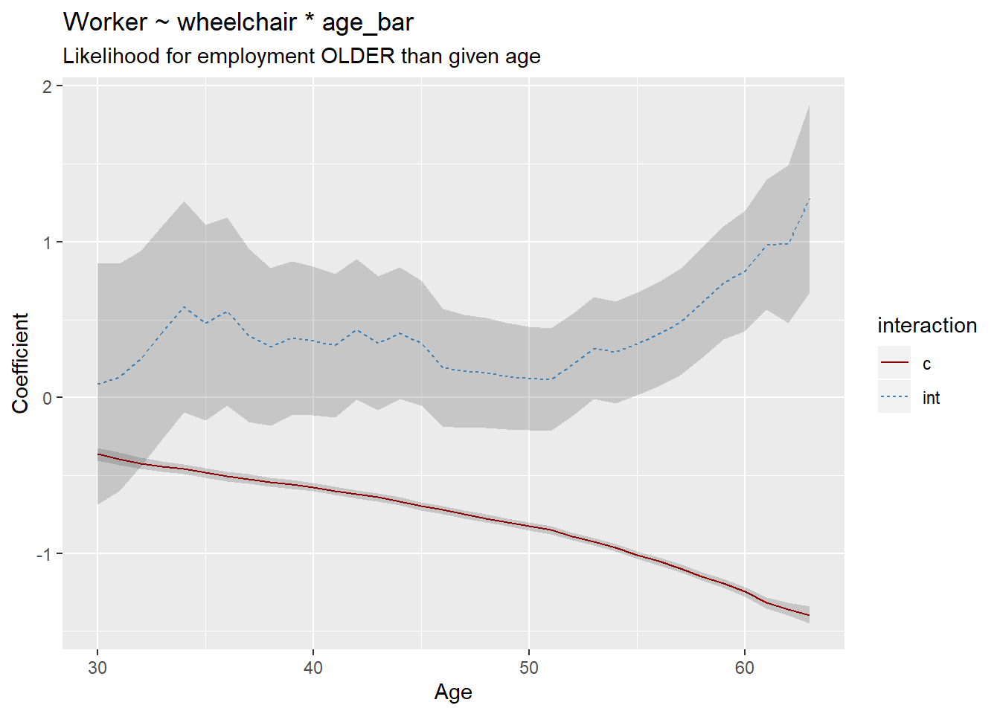
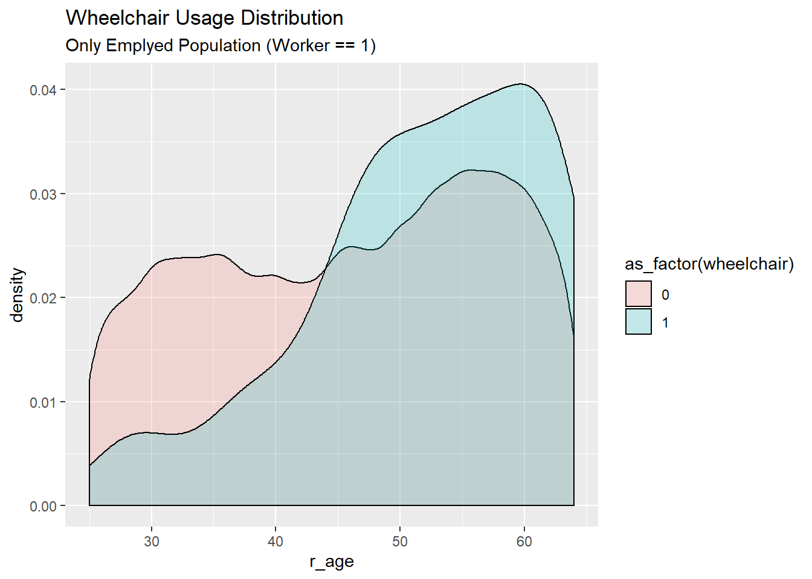
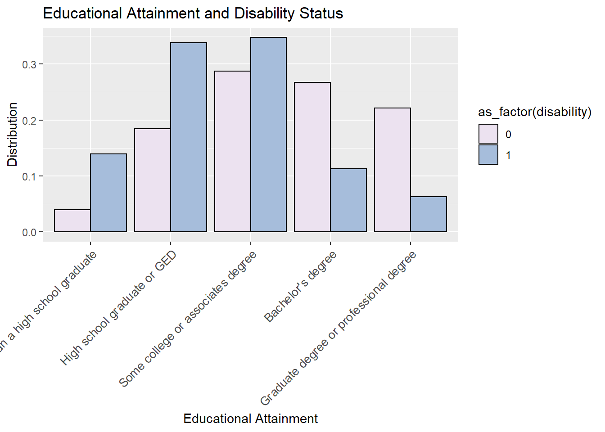
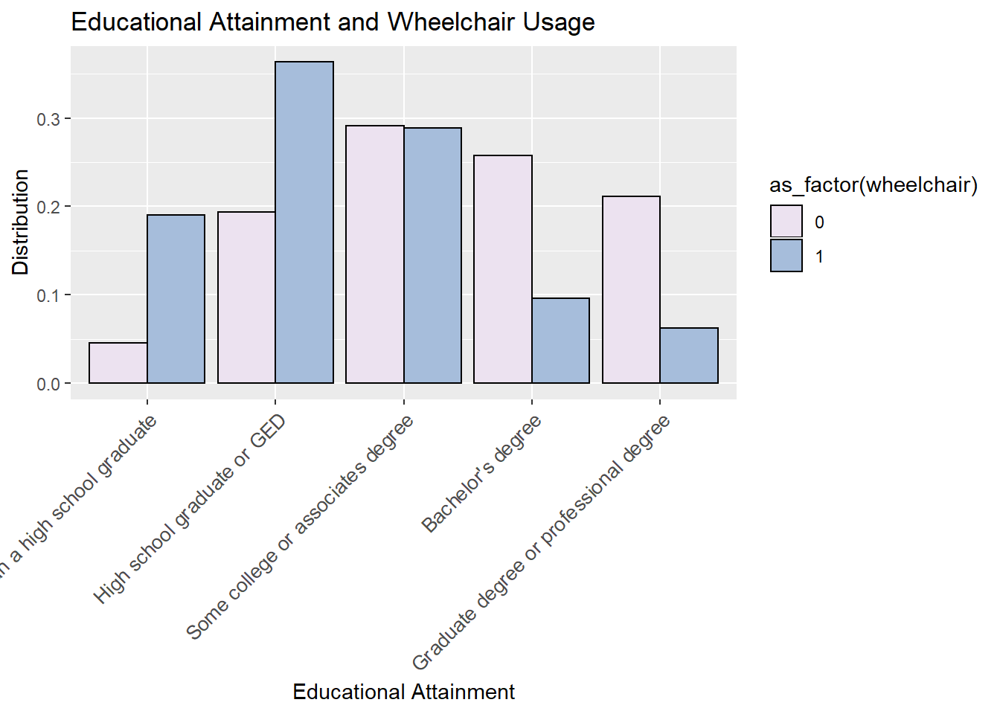
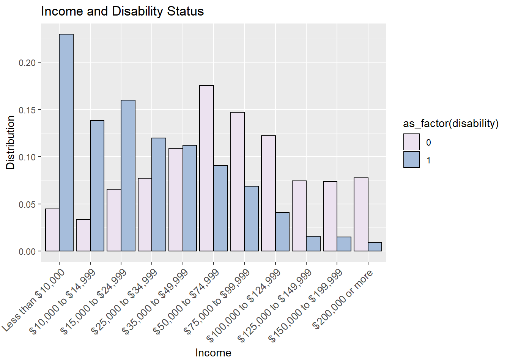
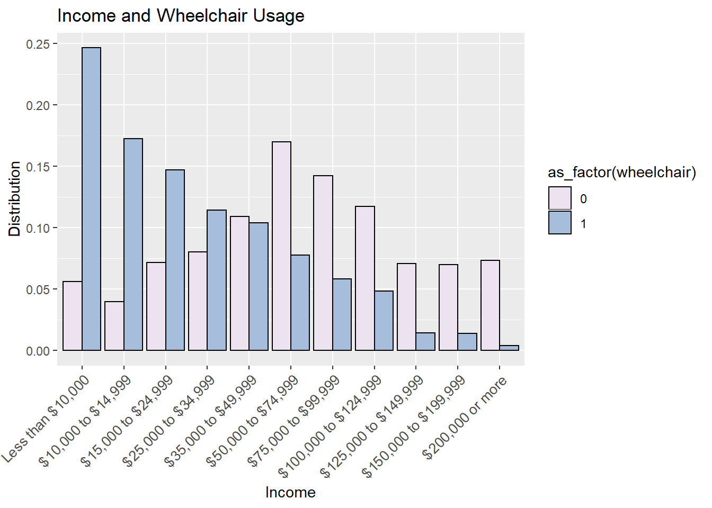

It is obvious that by having a wheelchair, liklihood of unemployment is much greater. However, other variables may be the cause of unemployment. Below is a summary table of the other variables we will consider in our model.
#summary table of disabled population
mydata %>%
group_by(worker, disability) %>%
summarise(respondents = n(),
count = sum(wtperfin),
av_age = mean(r_age),
median_inc = median(inc_cont),
male = mean(male),
wrk_home = mean(wrk_home),
college_plus = mean(college_plus),
pop_million = mean(pop_million)) %>%
ungroup() %>%
mutate(dist = percent(count/sum(count), accuracy = 0.1)) %>%
select(-count) %>%
datatable()# summary table of wheelchair usage
mydata %>%
group_by(worker, wheelchair) %>%
summarise(respondents = n(),
count = sum(wtperfin),
av_age = mean(r_age),
median_inc = median(inc_cont),
male = mean(male),
wrk_home = mean(wrk_home),
college_plus = mean(college_plus),
pop_million = mean(pop_million)) %>%
ungroup() %>%
mutate(dist = percent(count/sum(count), accuracy = 0.1)) %>%
select(-count) %>%
datatable()For this study we considered only the population between 24 and 64. We are only interested in the population that is most likely looking for employment. Below are the comparisons of worker status, wheelchair status and disabitlity status against age, respectively.
# age density for worker
mydata %>%
ggplot(aes(r_age, fill = as_factor(worker))) + geom_density(alpha = 0.2) +
# looks like old people are unemployed...
ggtitle("Worker Status Distribution", subtitle = "Employed and Unemployed for Every Age")
This clearly shows that unemployment increases with age.
# age density for wheelchair users
mydata %>%
ggplot(aes(r_age, fill = as_factor(wheelchair))) + geom_density(alpha = 0.2) +
ggtitle("Wheelchair Status Distribution", subtitle = "Wheelchair Usage for Every Age")
Age is a continuous variable and is often used as a quadratic term. For example, likelihood of employment increases as you get older, lets say to about 50, but then for every year after that, likelihood tends to decrease. This would result in a negative quadtratic term.
For our study, we will use age as a categorical term. In fact, we can make it a binary term as either older than a certain age (1) or younger than that age (0). To find the ideal age to set the binary variable, we ran a binary logistic regression model at every age and graphed the coefficients with both the main effect and the interaction term.
# turns age into a binary variable: older than x, 0 or 1
coefficients <- list()
for(i in 30:63){
# munging
df <- mydata %>%
mutate(age_bar = ifelse(r_age > i, T, F))
# Estimate model
fit <- glm(worker ~ wheelchair*age_bar, data = df, family = "binomial") %>%
summary()
out_element <- list(
"i" = i,
#M:age_barTRUE (coef represents liklihood to take M trip if over age i)
"coefficient_c" = fit$coefficients[3, 1],
"coefficient_int" = fit$coefficients[4, 1],
"stderror_c" = fit$coefficients[3, 2],
"stderror_int" = fit$coefficients[4, 2]
)
coefficients[[i]] <- out_element
}
dplyr::bind_rows(coefficients) %>%
gather(variable, value, -i) %>%
separate(variable, c("type", "interaction")) %>%
spread(type, value) %>%
ggplot(aes(x = i, y = coefficient, group = interaction)) +
geom_ribbon(aes(ymin = coefficient - 1.96 * stderror,
ymax = coefficient + 1.96*stderror),
alpha = 0.2) +
geom_line(aes(color = interaction, linetype = interaction)) +
scale_color_manual(values = c("darkred", "steelblue")) +
ggtitle("DAP ~ 1| age_bar",
subtitle = "Likelihood for employment OLDER than given age") +
ylab("Coefficient") +
xlab("Age")
Does this trend make any sense? The interaction coefficient is an intercept point \(\beta*(wheelchair*age_{bar})\) where \(age_{bar}\) is either a 1 or a 0. Below is density plot of just employed workers. Yes, the trend seems to be true. More employed workers are above the age of 40.
mydata %>%
filter(worker == 1) %>%
ggplot(aes(r_age, fill = as_factor(wheelchair))) + geom_density(alpha = 0.2) +
ggtitle("Wheelchair Usage Distribution", subtitle = "Only Emplyed Population (Worker == 1)")
From looking at the distribution of educational attianment, there is a slight difference between the wheelchair user group to the disabled population group. Maybe education has a larger effect on the wheelchair user population than the disabled population.
# disabilty
mydata %>%
group_by(educ, disability) %>%
summarise(population = sum(wtperfin)) %>%
group_by(disability) %>%
mutate(distribution = population/sum(population)) %>%
ggplot(aes(x = as_factor(educ), y = distribution)) +
geom_col(aes(fill = as_factor(disability)), colour = "Black", position = "dodge") +
ggtitle("Educational Attainment and Disability Status") +
labs(x = "Educational Attainment", y = "Distribution") +
scale_fill_brewer(palette = "PuBuGn", direction = 2) +
theme(axis.text.x =
element_text(size = 10, angle = 45, hjust = 1, vjust = 1))
# plot education
mydata %>%
group_by(educ, wheelchair) %>%
summarise(population = sum(wtperfin)) %>%
group_by(wheelchair) %>%
mutate(distribution = population/sum(population)) %>%
ggplot(aes(x = as_factor(educ), y = distribution)) +
geom_col(aes(fill = as_factor(wheelchair)), colour = "Black", position = "dodge") +
ggtitle("Educational Attainment and Wheelchair Usage") +
labs(x = "Educational Attainment", y = "Distribution") +
scale_fill_brewer(palette = "PuBuGn", direction = 2) +
theme(axis.text.x =
element_text(size = 10, angle = 45, hjust = 1, vjust = 1))
The comparison here between disability status and wheelchair usage status shows almost no difference. Both the disabled and wheelchair user populations seem to have lower incomes than the able bodied population. For our study we will use the log transform of the continuous variable for income.
# plot income for disability
mydata %>%
filter(hhfaminc != "-9") %>%
group_by(hhfaminc, disability) %>%
summarise(population = sum(wtperfin)) %>%
group_by(disability) %>%
mutate(distribution = population/sum(population)) %>%
ggplot(aes(x = as_factor(hhfaminc), y = distribution)) +
geom_col(aes(fill = as_factor(disability)), colour = "Black", position = "dodge") +
ggtitle("Income and Disability Status") +
labs(x = "Income", y = "Distribution") +
scale_fill_brewer(palette = "PuBuGn", direction = 2) +
theme(axis.text.x =
element_text(size = 10, angle = 45, hjust = 1, vjust = 1))
# plot income
mydata %>%
filter(hhfaminc != "-9") %>%
group_by(hhfaminc, wheelchair) %>%
summarise(population = sum(wtperfin)) %>%
group_by(wheelchair) %>%
mutate(distribution = population/sum(population)) %>%
ggplot(aes(x = as_factor(hhfaminc), y = distribution)) +
geom_col(aes(fill = as_factor(wheelchair)), colour = "Black", position = "dodge") +
ggtitle("Income and Wheelchair Usage") +
labs(x = "Income", y = "Distribution") +
scale_fill_brewer(palette = "PuBuGn", direction = 2) +
theme(axis.text.x =
element_text(size = 10, angle = 45, hjust = 1, vjust = 1))